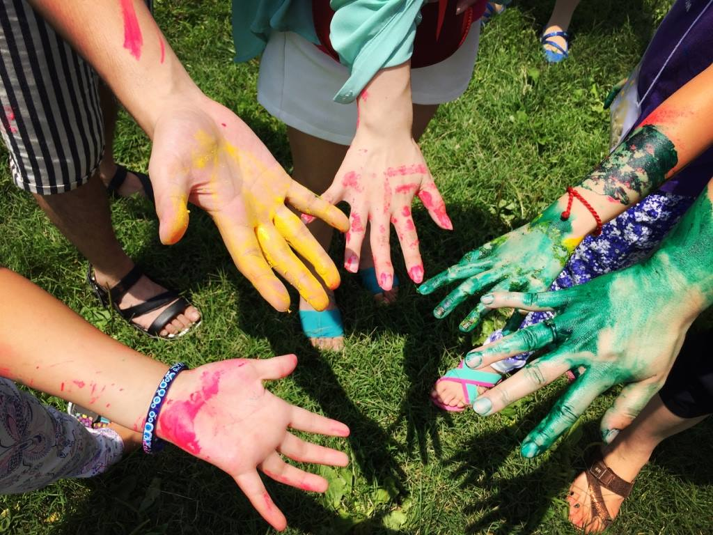

Design Challenge
What is the problem I am trying to solve?
If there is something you feel strongly about, like a cause, non-profit, or an
organization that helps others. Whatever it may be if you find that then you want to see what your
next steps will be to help and to know how you feel, so those feelings can encourage you to make the
movement you will need to do to make the situation better.